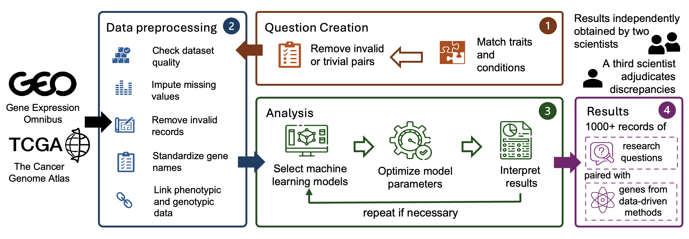
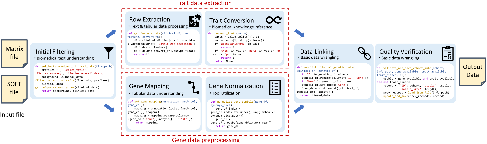

Abstract
Recent advancements in machine learning have significantly improved the identification of disease-associated genes from gene expression datasets. However, these processes often require extensive expertise and manual effort, limiting their scalability. Large Language Model (LLM)-based agents have shown promise in automating these tasks due to their increasing problem-solving abilities.
To support the evaluation and development of such methods, we introduce GenoTEX, a benchmark dataset for the automated analysis of gene expression data. GenoTEX provides analysis code and results for solving a wide range of gene-trait association problems, encompassing dataset selection, preprocessing, and statistical analysis, in a pipeline that follows computational genomics standards. The benchmark includes expert-curated annotations from bioinformaticians to ensure accuracy and reliability.
To provide baselines for these tasks, we present GenoAgent, a team of LLM-based agents that adopt a multi-step programming workflow with flexible self-correction, to collaboratively analyze gene expression datasets. Our experiments demonstrate the potential of LLM-based methods in analyzing genomic data, while error analysis highlights the challenges and areas for future improvement.
Introduction
The Challenge
Gene expression analysis is crucial for understanding biological mechanisms and advancing clinical applications such as disease marker identification and personalized medicine. However, current approaches face several challenges:
- Labor-Intensive: Bioinformaticians spend up to 45% of their work hours on tasks that could be automated
- Expensive: The genetics research industry incurs around $1.72 billion annually on manual data analysis tasks
- Complex: Analysis requires integrating data across multiple large, semi-structured files with high-dimensional, sparse data
- Expertise-Dependent: Tasks demand flexible planning, troubleshooting, and domain knowledge inference abilities
Our Solution
GenoTEX addresses these challenges by providing a standardized benchmark for evaluating and developing automated methods for gene expression data analysis. The benchmark focuses on gene-trait association (GTA) problems: identifying genes whose expression patterns relate to specific traits while accounting for additional biological factors.
The GenoTEX Benchmark
Benchmark Pipeline
GenoTEX follows a standardized pipeline that represents state-of-the-art analytics in computational genomics. The benchmark was curated by trained bioinformaticians following rigorous guidelines over 20 weeks.

Overview of the GenoTEX benchmark curation process, illustrating the standardized pipeline for analyzing gene expression datasets.
Key Features
🎯 Three Evaluation Tasks
Dataset Selection, Data Preprocessing, and Statistical Analysis with comprehensive metrics
📊 Real-World Complexity
Analysis of actual gene expression data from GEO and TCGA databases
✅ Expert-Curated
High-quality annotations from trained bioinformaticians with rigorous quality control
🔬 Scientific Relevance
132 traits across 9 categories including cardiovascular and neurological disorders
Data Preprocessing Pipeline

High-level schematic of the GEO data preprocessing pipeline with example code of core components.
GenoAgent: Multi-Agent Baseline
We propose GenoAgent, a team of LLM-based agents with specialized roles that mirror those in a genomic data science team. The system demonstrates four key capabilities:
Context-Aware Planning
Agents complete tasks step by step, choosing the next action based on overall goals and previous results
Tool Utilization
Select and use library functions to assist with data preprocessing and statistical analysis
Domain Knowledge Inference
Observe metadata and intermediate results, using domain knowledge to infer desired information
Error Correction
Analyze program execution errors and iteratively correct them through multi-agent collaboration
Agent Roles
Project Manager
Coordinates the analysis process and assigns tasks following the standardized pipeline
Data Engineer
Focuses on data preprocessing tasks including dataset selection and feature extraction
Statistician
Performs statistical analysis to identify significant disease-associated genes
Code Reviewer
Helps debug code and verifies that implementations follow instructions correctly
Domain Expert
Provides professional knowledge consultation for complex data processing tasks
Experimental Results
End-to-End Performance
GenoAgent with OpenAI o1 achieved an AUROC of 0.74 in identifying significant genes from raw input data. While promising, there remains a gap compared to human expert performance (AUROC: 0.89), indicating substantial room for improvement.
Dataset Selection
87.32% F₁
for filtering
80.25%
accuracy for selection
Data Preprocessing
80.63% CSC
for gene data
32.28% CSC
for trait data
Statistical Analysis
93.83% F₁
with expert data
0.97 AUROC
high discrimination
Key Findings
- Multi-agent collaboration is essential: Code Reviewer and Domain Expert agents significantly improve performance
- Clinical data extraction is challenging: Trait data preprocessing showed lower performance (32.28% CSC) compared to gene data (80.63% CSC)
- Strong LLM performance matters: Results vary significantly across different LLM backbones
- Batch effect correction is crucial: Including BEC improved AUROC from 0.86 to 0.97 on preprocessed data
Future Directions
Our analysis reveals important areas for improvement:
- Developing more stable self-correction mechanisms for iterative refinement
- Enhancing domain knowledge through retrieval-augmented generation
- Improving collaborative frameworks for resolving technical disagreements
- Advancing clinical feature extraction capabilities
Citation
If you find GenoTEX useful for your research, please cite our paper:
@misc{liu2025genotex,
title={GenoTEX: An LLM Agent Benchmark for Automated Gene Expression Data Analysis},
author={Haoyang Liu and Shuyu Chen and Ye Zhang and Haohan Wang},
year={2025},
eprint={2406.15341},
archivePrefix={arXiv},
primaryClass={cs.LG},
url={https://arxiv.org/abs/2406.15341},
}
Contact
For questions or feedback, please contact:
- Haoyang Liu: hl57@illinois.edu
- GitHub Issues: github.com/Liu-Hy/GenoTEX/issues